생물분류기사(식물) (2012-05-20 기출문제)
1과목: 계통분류학
1. 다음중 변이의 종류를 크게 비유전적 변이와 유전적 변이로 구분할 때 비유전적 변이에 해당하는 것은?
- 암수모자이크 및 간성
- 불연속적인 개체변이
- 신경원성 변이
- 세대교번
(정답률: 41%)

2. 다음 식물 과 중 육수화서를 갖는 것은?
- 미나리과
- 천남성과
- 벼과
- 뽕나무과
(정답률: 80%)
3. 다음 계통분류 형질 중 분자분류학적 접근에서 볼때 가장 다양한 분류계급에서 적용이 가능한 것은?
- 플라보노이드
- 동위효소
- 셀룰로오즈
- 핵산
(정답률: 82%)
4. 다음 분류군 중 세계의 바다플랑크톤으로 먹이연쇄에 있어서 매우 중요한 역할을 하는 무리는?
- 윤충류(Rotifera)
- 요각류(Copepoda)
- 지각류(Cladocera)
- 섬모충류(Cilliata)
(정답률: 75%)
5. 종자식물중 은행나무강의 특징으로 가장 적합한 것은?
- 중복수정한다.
- 물관요소가 발달한다.
- 운동성있는 정자를 형성한다.
- 잎은 그물맥이다.
(정답률: 79%)
6. 다음 중 환형동물의 특징으로 가장 거리가 먼 것은?
- 혈관계는 개방혈관계이고 호흡색소가 없다.
- 유생이 있을 때는 담륜자유생이다.
- 체벽에는 종주근과 환상근이 발달해 있다.
- 소화계는 완전하며 체절제로 배열되어 있지 않다.
(정답률: 44%)
7. 다음 연체동물 중 낙지, 문어, 앵무조개 등을 포함하는 무리로 유영에 적합한 구조를 가지고 있으며, 사새아강, 이새아강으로 나뉘는 것은?
- 두족강
- 복족강
- 굴족강
- 미공강
(정답률: 78%)
8. 다음 중 조직과 기관이 가장 명확하게 분리되어 있지 않은 동물은?
- 회충
- 곤봉히드라
- 해로동굴해면
- 관이끼벌레
(정답률: 63%)
9. 다음 설명은 어느 문(Phylum)에 해당되는가?
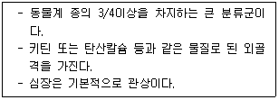
- Arthropoda
- Echiurida
- Echinodermata
- Chordata
(정답률: 80%)
10. 다음은 분류학적 형질에 관한 설명이다. ( )안에 공통으로 가장 알맞은 것은?
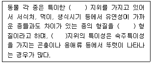
- 생리적
- 생태적
- 형태적
- 행동적
(정답률: 79%)
11. 다음은 어떤 식물이며 생활사에서 어느 세대에 속하는가?
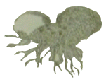
- 나자식물의 배우체
- 양치식물의 배우체
- 나자식물의 포자체
- 양치식물의 포자체
(정답률: 75%)
12. 절지동물을 강으로 나누는 기준과 이에 따른 분류군의 명칭이 옳게 짝지어진 것은?
- 몸의 구분 : 머리, 가슴, 배의 3부분 - 다지(류)강
- 몸의 구분 : 머리와 가슴배의 2부분 - 곤충강
- 협각 : 없음 - 거미강
- 눈 : 겹눈 - 갑각강
(정답률: 64%)
13. 식물분류계급에 따른 학명의 어미 중 아계(亞界)에 해당 하는 것은?
- -aceae
- -bionta
- -opsida
- -ales
(정답률: 70%)
14. 다음 중 몸의 특정 부위가 다른 부분에 비해 성장률이 다를 때 일어나는 변이(variation)의 종류에 해당하는 것은?
- neurogenic variation
- ecophenotypic variation
- traumatic variation
- allometric variation
(정답률: 46%)
15. 개체발생(Ontogeny)은 계통발생(Phylogeny)을 반복한다는 반복설(Recapitulation theory)을 주장하여 계통탐구에 크게 이바지 하였고 1866년 즈음에 알려진 생물의 주요 분류군들을 대상으로 나무 모양의 계통수를 작성한 생물학자는?
- Simpson
- Darwin
- Haeckel
- Wallace
(정답률: 41%)
16. R.H.Whittaker 의 5계에 포함되지 않는 것은?
- Euglenophyta
- Animalia
- Monera
- Fungi
(정답률: 65%)
17. 린네는 동물범주를 5계급으로 설정하였고, 그후 알려진 동물의 종류가 많아짐에 따라 그 수가 20여개 이상으로 늘어났는데, 그중 기본적인 7범주에 해당하지 않는 것은?
- Kingdom
- Genesis
- Family
- Class
(정답률: 81%)
18. 쌍자엽식물과 단자엽식물의 일반적인 특징을 비교한 것으로 옳지않은 것은?
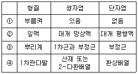
- ①
- ②
- ③
- ④
(정답률: 86%)
19. 동물의 각 범주에 배치되는 분류군에는 학명이 주어진다. 다음 중 과(Family)의 어미가 바르게 표기된 것은?
- Homininae
- Hominidae
- Hominoidea
- Hominini
(정답률: 74%)
20. 다음 현화식물의 기재용어에 대한 설명으로 옳지 않은 것은?
- 경침(莖針)은 가지의 끝이나 전체가 가시로 변화된 것으로 주엽나무의 가시와 같이 부러질지언정 가지에서 잘 떨어지지 않는다.
- 피침(皮針)은 껍질에서 돋아나온 것으로 장미, 음나무 등의 가시가 이에 속하며, 손으로 떼면 곱게 떨어진다.
- 엽흔(葉痕)은 잎이 가지에서 떨어진 자국을 말하며, 각 엽흔의 표면에는 가지에서 잎속으로 연결된 관속조직이 잘라진 흔적이 있다.
- 눈(bud)에 있는 정아(頂芽)는 줄기의 성장을 유도하여 환경조건이 허락하는 한 생장을 계속할 수 있도록 한다.
(정답률: 70%)
2과목: 환경생태학
21. 독일의 과학자 리비히(Liebig)에 의해 주장된 최소량의 법칙(law of minimum)에 관한 설명으로 가장 적합한 것은?
- 식물의 생장은 생장에 필요한 영양원소의 양이 많고 적음에 상관없이 공급이 부족한 원소에 의해 제한된다.
- 필요한 양을 기준으로 이용될 수 있는 양이 가장 많은 영양소에 의해 유기체의 생장이 제한된다.
- 인과 질소가 모두 부족할 경우 두 성분 중 하나를 보충하면 절반정도의 생산량을 기대할 수 있다.
- 생물의 생자에 필요한 양보다 적어서 생존이나 생장을 제한하는 상태를 최적조건(optimum condition)이라한다.
(정답률: 73%)
22. 다음 중 폐기물의 해양투기로 인한 해양오염을 방지하기 위한 국제협약(의정서)은?
- 몬트리올의정서
- 리우협약
- 도쿄의정서
- 런던협약
(정답률: 80%)
23. 호수는 자체의 물리적 특징과 생물의 독특한 분포에 따라 연안대, 준조광대, 심연대 수역으로 나뉘어지는데 다음 영양단계 중 호수의 심연대에서 주로 분포하는 것은?
- 에너지
- 생산자
- 1차소비자
- 분해자
(정답률: 88%)
24. 단위면적당 생물의 전체무게를 무엇이라 하는가?
- Biomass
- Gross Primary Productivity
- Net Primary Productivity
- Primary Trophic Level
(정답률: 88%)
25. 다음 대기 오염물질의 분류중 1차 및 2차 오염물질 모두에 해당하는 것은?
- NO2
- CO2
- CO
- Pb
(정답률: 78%)
26. 자연생태계에서 관찰되는 개체군의 집중분포에 관한 설명으로 옳지 않는 것은?
- 이질적인 서식공간내에서는 개체들이 좋아하는 특정지역에 집중적으로 분포하게 된다.
- 환경적응과정에서 개체간의 협동이 이루어질수 있으며 이로 인하여 특정서식 지역에 집중적으로 분포하게 된다.
- 서식단위간 밀도의 분산값이 0인 특성을 보이며, 수리적으로는 (+)이항분포형을 따른다.
- 개체들이 무리단위로 생활하는 경우 각 무리의 분포는 임의적이더라도 개체단위로 파악하면 집중분포를 보인다.
(정답률: 73%)
27. 농경생태계에 관한 설명으로 옳지 않은 것은?
- 자연생태계와 인공생태계의 중간형태이다.
- 생산성을 높이는 보조에너지원은 자연에너지라기 보단 가공된 원료이다.
- 종다양성은 인간의 관리로 인하여 감소한다.
- 종속영양적인 특성을 가진다.
(정답률: 58%)
28. 다음 중 두 종개체군의 상호 작용을 유형별로 구분할 때, 한 편은 이익을 얻고 다른 편은 해를 받는 것은?
- 편해공생(amensalism)
- 중립(neutralism)
- 기생(parasitism)
- 경쟁(competition)
(정답률: 66%)
29. 라운키에르(Raunkiaer)의 식물생활형으로 나누었을 때 반지중식물에 해당하는 것은?
- 소나무
- 국화
- 민들레
- 튤립
(정답률: 64%)
30. Shannon index(H)로 흔히 계산할 수 있는 지수는? (단, H=-ΣPi(log Pi), Pi는 i번째 종의 개체수 비율(ni/N))
- 유사도(Similarity) 지수
- 중요도(Importance) 지수
- 다양도(Diversity) 지수
- 빈도(Frequence) 지수
(정답률: 72%)
31. 지구는 6개의 주된 생물지리학적 지역으로 나누는데 우리나라가 속한 생물지리학적 지역은?
- 구북구(palearctic)
- 동양구(Oriental)
- 신북구(Nearctic)
- 오스트랄라시구(Australasian)
(정답률: 70%)
32. 수질 및 대기오염과 상대 비교시 토양오염의 특성으로 가장 거리가 먼 것은?
- 오염경로가 다양하다.
- 원상복구가 어렵다.
- 오염영향이 광역적이다.
- 타 환경인자와의 영향관계가 모호하다.
(정답률: 60%)
33. 다음 중 생물권에서 연간 유입되는 태양 방사 에너지의 소산율이 가장 낮은 것은?
- 광합성
- 직접적 열 전환
- 반사
- 증발, 강우
(정답률: 72%)
34. 생태적 천이(ecological succession)에 관한 설명으로 옳은 것은?
- 1차천이는 파괴된 곳(농토, 벌목지 등)에서 군집이 발달하는 것이다.
- 타생천이는 불이나 홍수 같은 물리적 힘에 의해 영향을 받는 군집에서 발생한다.
- 자생천이는 타생천이보다 그 변화를 예측하기 힘든 편이다.
- 2차천이는 1차천이보다 느린 속도로 일어난다.
(정답률: 40%)
35. 생태계의 에너지 흐름에 관한 설명으로 옳지 않은 것은?
- 에너지는 생물군 사이에 생성된 환(cycle)을 통하여 열에너지로 전환하고, 안정된 생태계에서는 체제내에서 증가된다.
- 생물의 활동에 이용된 에너지는 열의 형태로 체외로 방출된다.
- 에너지는 생산자, 소비자, 분해자를 거쳐 흘러간다.
- 에너지의 흐름은 한쪽 방향으로만 진행된다.
(정답률: 72%)
36. 다음 중 온실효과를 유발하는 대기 중의 가스상 물질로 가장 거리가 먼 것은?
- 이산화탄소
- 메탄
- 아산화질소
- 수소
(정답률: 90%)
37. 대장균(E. coli)과 같이 소수의 세균을 영양분이 풍부한 실험실 배양배지에서 배양했을 때 처음 24시간 동안 관찰되는 생장곡선으로 가장 적합한 것은?
- 직선증가 곡선
- J형 곡선
- S형 곡선
- R형 곡선
(정답률: 83%)
38. 일반적으로 중독시 Hunter-Russel증후군으로 일컬어지고 있으며, 사지 감각이상, 구음장애, 청력장애, 구심성 시야흡착, 소뇌성 운동실조 등의 증상을 수반하는 오염물질로 가장 적합한 것은?
- 카드뮴
- 납
- 메틸수온
- 비소
(정답률: 72%)
39. A군집에는 5종이 서식하며, 각각 96개체, 1개체, 1개체, 1개체, 1개체로 이루어져 있으며, B군집에는 5종이 석식하며, 각각 20개체씩으로 이루어져 있을 경우, 두 군집의 종풍부도와 종다양성에 대한 설명으로 옳은 것은?
- 두 군집의 종풍부도는 동일하며, 종 다양성은 B군집이 크다.
- 두 군집의 종풍부도와 종다양성은 모두 동일하다.
- 종풍부도는 B군집이 크고, 군집의 종다양성은 동일하다.
- B군집이 종풍부도와 종다양성에서 모두 크다.
(정답률: 63%)
40. 물에 난용성이므로 수용성 가스와는 달리 강우에 의한 영향을 거의 받지 않을 뿐 아니라, 다른 물질의 흡착현상도 나타내지 않으며, 유해한 화학반응도 거의 일으키지 않는 오염물질은?
- SO2
- CO
- H2S
- NH3
(정답률: 60%)
3과목: 형태학
41. 다음은 오래된 줄기의 목재에 관한 설명이다. ( )안에 가장 적합한 것은?
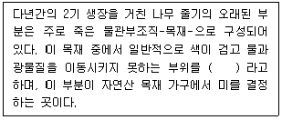
- 환재
- 심재
- 추재
- 춘재
(정답률: 87%)
42. 일정한 기능을 가진 세포가 집단을 이루고 있는 것을 조직(Tissue)이라고 하며 동물조직은 4가지 기본조직(Primary Basic Tissue)으로 이루어져 있다. 이 기본조직 4가지에 해당하지 않는 것은?
- 지지조직
- 상피조직
- 근육조직
- 신경조직
(정답률: 61%)
43. 다음 설명하는 기관으로 가장 적합한 것은?
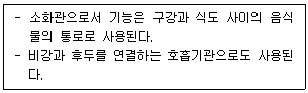
- pharynx
- anus
- pancreas
- vill
(정답률: 65%)
44. 배(embryo)에서 장차 줄기나 잎으로 발달하게 될 부분은?
- 하배축(hypocotyl)
- 상배축(epicotyl)
- 유근(radicle)
- 근초(coleorhiza)
(정답률: 74%)
45. 다음 중 현화식물의 자성배우자체(female gametophyte)인 것은?
- 밑씨
- 꽃가루관
- 7개의 세포(8핵)로 된 배낭
- 2 또는 3개의 세포로된 꽃가루
(정답률: 61%)
46. 과피(果皮, pericarp)는 다음 중 어느 부분이 발달된 것인가?
- 꽃잎(petal)
- 꽃받침(sepal)
- 씨방벽(ovary wall)
- 밑씨(ovule)
(정답률: 81%)
47. 건생식물의 잎에 대한 설명중 옳지 않은 것은?
- 증산을 감소시키기 위해 잎의 크기는 작아진다.
- 공변세포는 주변 표피세포보다 돌출되는 것이 일반적인 경향이다.
- 모용과 다육성 저수조직이 발달하는 것이 일반적인 경향이다.
- 표면의 각피층과 납질층이 비후되는 경향이다.
(정답률: 85%)
48. 동물의 소화계에 대한 설명으로 가장 거리가 먼 것은?
- 소장의 내벽은 융모와 미세융모를 통해 표면적을 넓힌다.
- 대장의 주 기능은 물과 무기염류의 흡수이다.
- 일반적으로 초식성 동물은 육식성 동물보다 몸체에 비해 소화관이 짧다.
- 간은 쓸개즙을 생성하고, 이자는 소화효소와 중탄산염이 풍부한 알칼리성 액체를 생산해낸다.
(정답률: 77%)
49. 어떤 식물의 겨울눈은 여러장의 비늘 잎으로 싸여 있다. 비늘잎은 주로 무엇을 보호하기 위한 것인가?
- 액포(vacuole)
- 배(embryo)
- 측재분열조직(lateral meristem)
- 정단분열조직(apical meristem)
(정답률: 78%)
50. 척주에 관한 설명으로 옳지 않은 것은?
- 인간은 꼬리부분인 미추에 따라 한 두 개의 차이는 있지만 보통 15개의 척추가 있다.
- 인간은 유합된 척추를 제외한 모든 척추는 추간원판에 의해 서로 분리되어 있는데 추간원판은 수많은 콜라겐 섬유를 포함하는 연골이다.
- 인간의 척주는 지지체로서의 역할 이외에도 척수를 보호하는 일을 한다.
- 인간은 12쌍의 갈비뼈를 가지는데, 이들은 모두 흉추와 관절을 이루고 있지만 모든 갈비뼈들이 가슴뼈와 직접 연결되어 있지는 않다.
(정답률: 50%)
51. 다음 중 중복수정의 결과 형성된 산물의 표현으로 가장 적합한 것은?
- 2개의 배(embryo)
- 씨앗이 2개 들어있는 과일
- 배와 배젖
- 2개의 떡잎
(정답률: 71%)
52. 다음 중 잎에서 광합성이 일어나는 조직은?
- 해면조직
- 표피조직
- 후각조직
- 후벽조직
(정답률: 43%)
53. 다음 중 극피동물에 대한 설명으로 옳지 않은 것은?
- 몸은 방사대칭이고 장체강동물이다.
- 소화계는 완전하고 항문이 없는 종도 있다.
- 대부분이 암수한몸이고, 체내수정을 한다.
- 배설기관이 없다.
(정답률: 53%)
54. 아래 그림과 같은 줄기의 형태는?
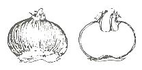
- 엽상경(cladophyll)
- 구경(corm)
- 괴경(tuber)
- 지하경(rhizome)
(정답률: 45%)
55. 다음과 같은 엽맥의 종류는?
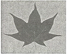
- 차상맥
- 장상맥
- 평행맥
- 우상맥
(정답률: 78%)
56. 다음 동물의 뇌 중 상대적으로 후각엽(Olfactory lobes)이 큰 것은?
- 상어
- 개구리
- 악어
- 닭
(정답률: 80%)
57. 유기영양물질을 포함하는 용질의 이동과 거리가 먼 것은?
- 반세포(companion cells)
- 물관세포(vessel elements)
- 체관요소(sieve elements)
- 체관부유조직(phloem parenchyma)
(정답률: 41%)
58. 다음 중 조류의 일반적인 특성으로 옳지 않은 것은?
- 피부는 얇고 땀샘이 없다.
- 몸은 표피성 깃털로 덮여 있다.
- 발은 보통 5개의 발가락을 가진다.
- 다리에 비늘이 있다.
(정답률: 87%)
59. 다음중 경골어류에 있는 유체기관으로 평형을 유지하고 물속에서 움직이지 않고 머물수 있게 해주는 기관은?
- swim bladder
- cloaca
- gill raker
- operculum
(정답률: 71%)
60. 다음 설명 중 옳은 것은?
- 갯지렁이는 환형동물에 속하며, 개방혈관계를 가지고 있다.
- 고이치아강, 진판새아강, 이인대아강 등은 연체동물의 부족강에 속한다.
- 빈모강(Oligochaeta)에 속하는 거머리류는 몸에 흡반이 있고, 환형동물에 속한다.
- 연체동물과 환형동물은 유사한 발생적 특징(유생의 유형:노플리우스)을 가지고 있으나, 계통적으로는 전혀 관계가 없는 문(phylum)들이다.
(정답률: 40%)
4과목: 보존 및 자원생물학
61. 다음 보전생물학의 기본적인 가정(hypothesis)으로 가장 거리가 먼 것은?
- 생물다양성은 이로운 것이다.
- 생태적으로 복잡한 것이 좋다.
- 개체군과 생물 종의 때아닌 절멸은 지극히 자연스런 일이다
- 진화는 이로운 현상이다.
(정답률: 85%)
62. 식물 중 보전을 위한 식물원의 기능으로 가장 거리가 먼 것은?
- 희귀종과 위험종보다는 일반적으로 널리 알려져 있는 종의 재배에 보다 많은 비중을 둔다.
- 생명체를 보전함과 아울러 건조 표본을 통해 식물의 분포나 서식지 요구도에 대한 정보를 제공하는 확실한 공급처의 역할을 한다.
- 대중에게 보전의 중요성을 교육시키는 역할을 수행한다.
- 탐사대 등을 파견하여 새로운 종을 발견하고 기초적인 연구를 수행한다.
(정답률: 84%)
63. 다음 중 생물다양성 보전과 관련한 국제 협약으로 가장 거리가 먼 것은?
- Taxonomic 협약
- CBD
- CITES
- 람사르 협약
(정답률: 77%)
64. 생물 군집 안의 종의 밀도를 추정하기 위해 반복적으로 표본 추출하는 조사방법으로서 식물의 종자나 유묘 또는 수상 무척추동물의 애벌레 시기처럼 조사 대상종의 생활주기 단계가 뚜렷하지 않거나, 작거나, 감추어져 있을 때 유용하게 적용되는 것은?
- 군집자원 표본조사
- 개체군 표본조사
- 균등도 표본조사
- 생존력 표본조사
(정답률: 47%)
65. 1991년 Mace와 Lande는 보전대상종을 위기종, 절멸위험종, 취약종으로 구분하여 제시하였는데 이 중 절멸위험종 구분으로 가장 적합한 것은?
- 5년 또는 2세대 안에 절멸될 확률이 90% 이상
- 10년 또는 5세대 안에 절멸될 확률이 50% 이상
- 20년 또는 10세대 안에 절멸될 확률이 20~50%
- 100년 또는 50세대 안에 절멸될 확률이 10~20% 이상
(정답률: 44%)
66. 다음 중 멸종속도 및 고유종에 관한 일반적인 설명으로 가장 거리가 먼 것은?
- 인류 역사상 멸종은 도서지역에 비해 대륙이 아주 심각하게 발생했다.
- 지리적으로 고립된 지역에서 고유종의 비율이 높다.
- 마다가스카르 섬은 고유종의 비율이 높다.
- 열대 습윤 산림지대에서 고유종의 비율이 높다.
(정답률: 79%)
67. 망그로브 생태계에 대한 설명으로 가장 거리가 먼 것은?
- 온대 지역의 염분이 높은 초지 생태계이다.
- 새우나 어류의 산란과 서식장소가 된다.
- 건축자재, 숯 등 목재 공급원이 된다.
- 동남아시아의 망그로브 산림은 벼의 재배와 상업용 새우의 부화를 위한 벌채로 파괴되고 있다.
(정답률: 67%)
68. 다음 중 이주 등과 관련하여 일시적으로 감소되거나 또는 변동이 심한 개체군을 의미하는 것은?
- logarithmic population
- meta population
- preservative population
- preserved population
(정답률: 84%)
69. 생물이 생태계에서 차지하는 구조적, 기능적 역할을 종합적으로 나타내는 개념을 무엇이라고 하는가?
- guild
- ecological niche
- synusia
- diurnal
(정답률: 80%)
70. 도서 생물 지리설에 기반하여 보호 지구를 설계할 때 다음 중 가장 양호한 보호 지구는?
- 여러 개로 나누어진 지구들이 서식지 공유가 없는 경우
- 여러 개로 나누어진 지구들이 원형으로 배열하고 생태 통로가 있는 경우
- 여러 개로 나누어진 지구들이 멀리 떨어져 있는 경우
- 여러 개로 나누어진 지구들이 선형으로 분포할 경우
(정답률: 78%)
71. 다음 중 자연 자원의 생산적 사용가치와 가장 거리가 먼 것은?
- 유전적 개량을 통한 신품종 개발
- 생태계 생산성
- 신약개발
- 목재
(정답률: 62%)
72. 서식지 단편화의 영향으로 가장 거리가 먼 것은?
- 종이 확산되고 정착하는 능력을 제한한다.
- 내부서식지에 비해 가장자리가 상대적으로 많아짐으로서 종의 영속성을 보장한다.
- 분할된 지역에 외래종이나 토착 병원균의 침입 가능성이 증가하게 된다.
- 산림의 가장자리에서는 바람이 강해지고 습도가 낮아져 산불이 일어날 가능성이 증가하게 된다.
(정답률: 87%)
73. 온실효과에 의한 기후변화는 종다양성을 급격히 감소시킬 것이라는 우려가 있는데 다음 중 그 이유를 설명한 것으로 가장 적합한 것은?
- 대부분의 생물은 현재의 서식지에 적응하여 기후가 변할 경우 이에 견디다가 결국에는 죽게 된다.
- 기후변화의 속도에 비하여 돌연변이가 일어나는 속도가 훨씬 느리다.
- 해수면이 상승하게 되면 저지대에 살던 생물은 서식지를 모두 잃게 된다.
- 갑작스런 기후변화가 일어날 경우 제한된 분포범위나 분산 능력이 약한 종은 적당한 서식처를 쉽게 찾지 못한다.
(정답률: 73%)
74. 다음은 생물다양성에 관한 설명이다. ( )안에 알맞은 것은?
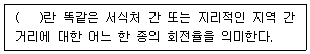
- delta diversity
- gamma diversity
- beta diversity
- alpha diversity
(정답률: 76%)
75. 자연적 멸종에 대한 설명으로 가장 적합한 것은?
- 대규모의 절멸(mass extinction)은 폐름기(Permian)에 일어났다.
- 예상치 못한 급격한 대재앙이 지구상에서 일어났을 때 자연적 멸종은 저속화, 소량화된 것으로 추정되고 있다.
- 모든 지질학적 연대기를 통해 나타난 멸종의 정도는 거의 일정하다.
- 대절멸과 같은 사건이 일어나지 않으면 생물종의 멸종은 일어나지 않는다.
(정답률: 74%)
76. 생태적 다양성에 대한 설명으로 가장 거리가 먼 것은?
- 자원이 다양해지면 그 곳에 사는 생물도 다양해진다.
- 일반적으로 생산성이 낮은 지역보다는 높은 지역에서 많은 종들이 공존할 수 있다.
- 기후가 안정되고 변화를 예견할 수 있는 지역에서는 그렇지 못한 지역보다 많은 종이 공존한다.
- 두 생태계가 인접하고 있는 지역인 추이대(ecotone)에는 종 다양성이 감소된다.
(정답률: 89%)
77. 국제자연보전연맹-세계보전연맹이 구분한 보존대상종 중 흔히 제한된 지리적 분포나 낮은 개체군 밀도로 인하여 개체수가 작은 종으로 당장은 위험에 직면하지 않겠지만 개체수의 부족으로 위험종이 될 가능성이 있는 것은?
- Vulnerable
- Rare
- Endangered
- Extinct
(정답률: 69%)
78. 다음 중 멸종되기 쉬운 종에 속하는 범주가 아닌 것은?
- 몸체가 작은 종
- 개체군의 크기가 감소하고 있는 종
- 지리적 분포 범위가 좁은 종
- 유전적 변이가 낮은 종
(정답률: 87%)
79. 야생종을 위한 표본추출전략 중 종의 수준에서 수집의 우선 순위로 가장 거리가 먼 것은?
- 개체군과 개체의 수가 빠르게 감소하고 있는 종
- 자연적으로 재도입될 수 있는 종
- 진화적 및 분류학적으로 유일한 종
- 현지에서의 보전이 불가능한 종
(정답률: 48%)
80. 생물다양성 보전을 위한 보호 우선순위 설정 기준으로 가장 거리가 먼 것은?
- 도입성( invasiveness)
- 위험성( endangerment)
- 유용성( utility)
- 차별성( distinctiveness)
(정답률: 56%)
5과목: 자연환경관계법규
81. 다음 중 습지보전법의 목적으로 가장 거리가 먼 것은?
- 습지의 효율적 보전∙관리에 필요한 사항을 규정한다.
- 습지오염에 따른 국민건강의 위해를 예방하고, 습지개발을 통하여 국민으로 하여금 그 혜택을 널리 향유할 수 있도록 한다.
- 습지에 관한 국제협약의 취지를 반영하고 국제협력의 증진에 이바지 한다.
- 습지와 그 생물다양성의 보전을 도모한다.
(정답률: 66%)
82. 국토기본법령상 중앙행정기관의 장 및 시∙도지사가 수립하는 국토종합계획 실행을 위한 소관별 실천계획은 몇 년 단위로 작성하는가?
- 1년
- 3년
- 5년
- 10년
(정답률: 61%)
83. 개발제한구역의 지정 및 관리에 관한 특별조치법 시행규칙상 경계표석의 규격 및 설치방법으로 옳지 않은 것은?
- 표석의 재룔는 강화플라스틱(FRP)으로 하고, 표석의 색은 녹색으로 한다.
- "개발제한구역" 이라는 그씨는 양각 후 도색마감(흰색)하고, 번호( 검은색 )는 구리 압출마감으로 부착한다.
- 강화플라스틱과 콘크리트로 된 기초가 일체가 되도록 설치한다.
- 글자체: 고딕체, 글자색: 녹색(Pantone 370C), 흰색(White 100%), 검은색(Black 100%)으로 한다.
(정답률: 60%)
84. 국토의 계획 및 이용에 관한 법률상 도시∙군관리계획에 관한 설명으로 옳지 않은 것은?
- 도시∙군관리계획을 입안하는 경우 입안을 위한 기초조사의 내용에 도시∙군관리계획이 환경에 미치는 영향 등에 대한 환경성검토를 포함하여야 한다.
- 도시∙군관리계획의 수립기준, 도시∙군관리계획도서 및 계획설명서의 작성기준∙작성방법 등은 대통령령으로 정하는 바에 따라 국토해양부장관이 정한다.
- 도시∙군관리계획 결정은 고시가 된 날부터 10일 후에 그 효력이 발생한다.
- 특별시장∙광역시장 등은 5년마다 관할구역의 도시∙군 관리계획에 대하여 타당성 여부를 재검토하여 정비하여야 한다.
(정답률: 60%)
85. 농지법규상 실습지 등으로 농지를 소유할 수 있는 공공단체 등의 범위기준에 해당하지 않는 것은?
- ⌜농약관리법⌟에 따라 등록을 한 농약의 제조업자∙수입업자 및 그 단체
- ⌜전통음식보존법⌟에 따라 지정∙등록된 한국전통음식 연구원
- ⌜농업기계화촉진법⌟에 따른 농업기계를 생산하는 자 및 그 단체
- ⌜종자산업법⌟에 따라 등록을 한 종자사업자 및 그 단체
(정답률: 73%)
86. 환경정책기본법령상 도시지역 중 녹지지역의 밤시간대(22:00~06:00) 소음환경기준은? (단, 일반지역을 대상으로 하며, 단위는 Leq dB(A))
- 40
- 45
- 50
- 55
(정답률: 58%)
87. 국토의 계획 및 이용에 관한 법률상 공동구 설치비용을 부담하지 아니한 자가 규정에 의한 공동구관리자의 허가 를 받지 아니하고 공동구를 사용한 경우의 과태료 부과기 준은?
- 300만원 이하의 과태료를 부과한다.
- 500만원 이하의 과태료를 부과한다.
- 1천만원 이하의 과태료를 부과한다.
- 3천만원 이하의 과태료를 부과한다.
(정답률: 32%)
88. 야생동∙식물보호법규상 행정처분기준으로 옳지 않은 것은?
- 일반기준으로 위반행위의 횟수에 따른 행정처분의 기준은 그 위반행위가 있은 날 이전 최근 2년간 같은 위반행위로 행정처분을 받은 경우에 적용한다.
- 일반기준으로 위반행위가 둘 이상인 경우로서 그에 해당하는 각각의 처분기준이 다른 경우에는 그 중 무거운 처분기준에 따른다.
- 개별기준으로 환경부령이 정하는 생물자원보전시설을 등록한 자가 갖추어야 할 등록여건 중 시설 및 인력요건이 모두 부족한 경우 1차 행정처분기준은 등록취소이다.
- 개별기준으로 규정에 의해 박제업의 등록을 한 자가 환경부령이 정하는 사항을 기재한 장부를 비치하지 아니한 경우 3차 행정처분기준은 영업정지 3개월이다.
(정답률: 43%)
89. 다음은 백두대간 보호에 관한 법률 시행령상 백두대간 보호지역의 지정∙지정해제 및 구역변경 고시사항이다. ( )안에 가장 알맞은 것은?
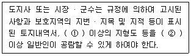
- ① 축척 2만 5천분의 1, ② 10일
- ① 축척 5만분의 1, ② 10일
- ① 축척 2만 5천분의 1, ② 20일
- ① 축척 5만분의 1, ② 20일
(정답률: 53%)
90. 환경정책기본법령상 이산화질소의 대기환경기준(ppm)은? (단, 24시간 평균치)
- 0.03 이하
- 0.⑤ 이하
- 0.06 이하
- 0.10 이하
(정답률: 60%)
91. 다음은 자연공원법상 사용되는 용어의 뜻이다. ( )안에 알맞은 것은?
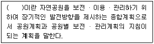
- 자연공원개발계획
- 자연공원보전계획
- 자연공원보존계획
- 공원기본계획
(정답률: 23%)
92. 야생동∙식물보호법상 덫∙창애∙올무 그 밖에 이와 유사한 방법으로 야생동물을 포획하는 도구를 제작∙판매∙소지 또는 보관한 자에 대한 벌칙기준으로 옳은 것은? (단, 학술연구, 관람∙전시, 유해야생동물의 포획 등 환경부령이 정하는 경우는 제외)
- 1년 이하의 징역 또는 5백만원 이하의 벌금
- 2년 이하의 징역 또는 1천만원 이하의 벌금
- 3년 이하의 징역 또는 2천만원 이하의 벌금
- 5년 이하의 징역 또는 3천만원 이하의 벌금
(정답률: 46%)
93. 독도 등 도서지역의 생태계보전에 관한 특별법 시행규칙상 특정도서에서의 행위허가신청서 작성 시 구비해야 할 서류목록으로 가장 거리가 먼 것은?
- 행위 대상지역의 범위 및 면적을 표시한 축적 2만 5천분의 1 이상의 도면 1부
- 당해 지역의 주민 의견을 수렴한 동의서 1부
- 당해 지역의 토지 또는 해역이용계획 등을 기재한 서류 1부
- 당해 행위로 인하여 자연환경에 미치는 영향예측 및 방지대책을 기재한 서류1부
(정답률: 70%)
94. 다음은 자연환경보전법령상 생태∙경관보전지역 지정에 사용하는 지형도이다. ( )안에 알맞은 것은?
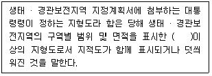
- 축척 5천분의 1
- 축척 2만 5천분의 1
- 축척 5만분의 1
- 축척 10만분의 1
(정답률: 42%)
95. 습지보전법상 습지보호지역으로 지정∙고시된 습지를 ⌜공유수면 관리 및 매립에 관한 법률⌟에 의한 면허없이 매립한 자에 대한 벌칙기준은?
- 5년 이하의 징역 또는 5천만원 이하의 벌금
- 3년 이하의 징역 또는 2천만원 이하의 벌금
- 2년 이하의 징역 또는 1천5백만원 이하의 벌금
- 1년 이하의 징역 또는 1천만원 이하의 벌금
(정답률: 62%)
96. 농지법규상 농지전용허가신청서에 첨부하여야 할 서류로 가장 거리가 먼 것은?
- 전용예정구역이 표시된 지적도 등본 또는 임야도 등본과 지형도
- 전용면적, 시설물의 활용계획 등을 명시한 농지전용신고서
- 해당농지의 전용이 농지개량시설 또는 도로의 폐지 및 변경이나 토사의 유출, 폐수의 배출, 악취의 발생 등을 수반하여 인근 농지의 농업경영과 농어촌 생활환경의 유지에 피해가 예상되는 경우에는 대체시설의 설치 등 피해방지계획서
- 전용하려는 농지의 소유권을 입증하는 서류(토지등기부등본으로 확인할 수 없는 경우에 한정한다) 또는 사용승낙서∙사용승낙의 뜻이 기재된 매매계약서 등 사용권을 가지고 있음을 입증하는 서류
(정답률: 47%)
97. 다음 중 국토기본법상 중앙행정기관의 장 또는 지방자치 단체의 장이 지역특성에 맞는 정비나 개발을 위하여 필요하다고 인정하는 경우에 수립하는 지역계획으로 가장 거리가 먼 것은? (단, 그 밖의 다른 법률에 의하여 수립하는 지역계획 등은 고려하지 않음)
- 특정지역을 대상으로 경제∙사회∙문화∙관광 등을 전략적으로 발전시키기 위하여 수립하는 개발계획
- 광역시와 그 주변지역, 산업단지와 그 배후지역 또는 여러 도시가 서로 인접하여 같은 생활권을 이루고 있는 지역 등을 광역적∙체계적으로 개발하기 위한 계획
- 환경오염과 환경훼손을 예방하고 환경을 적정하고 지속 가능하게 보전시키기 위해 자연환경 보전 대상지역을 중심으로 한 자연환경 보전개발계획
- 다른 지역에 비하여 개발수준이나 소득기반이 현저히 열악한 낙후지역의 개발을 촉진하기 위하여 수립하는 계획
(정답률: 24%)
98. 국토의 계획 및 이용에 관한 법률 시행령상 시설보호지구를 세분한 것에 포함되지 않는 것은?
- 항만시설보호지구
- 주거시설보호지구
- 학교시설보호지구
- 공용시설보호지구
(정답률: 66%)
99. 환경 정책기본법령상 하천의 수질 및 수생태계 환경기준으로 옳지 않은 것은? (단, 사람의 건강보호기준이며, 단위는 mg/L)
- 음이온계면활성제(ABS) : 0.5 이하
- 벤젠 : 0.⑤ 이하
- 클로로포름 : 0.08 이하
- 테트라클로로에틸렌(PCE) : 0.04 이하
(정답률: 50%)
100. 다음은 국토의 계획 및 이용에 관한 법률 시행령에서 용도지역 중 주거지역의 세분사항이다. ( )안에 알맞은 것은?
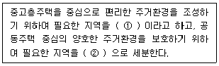
- ① 제2종전용주거지역, ② 제3종일반주거지역
- ① 제3종일반주거지역, ② 제2종전용주거지역
- ① 제3종전용주거지역, ② 제2종일반주거지역
- ① 제2종일반주거지역, ② 제3종전용주거지역
(정답률: 35%)
해설: 비유전적 변이는 환경적 요인에 의해 발생하는 변이로, 유전자의 염기서열에 직접적인 영향을 주지 않는다. 따라서 "암수모자이크 및 간성", "불연속적인 개체변이", "세대교번"은 모두 유전적 변이에 해당한다. 반면에 "신경원성 변이"는 환경적 요인에 의해 발생하는 변이로, 비유전적 변이에 해당한다. 신경원성 변이는 주로 화학물질, 복사선, 바이러스 등의 외부 요인에 의해 유발되며, 세포의 DNA에 손상을 일으키는 작용을 한다. 이러한 손상은 종종 세포의 기능에 영향을 미치며, 종종 질병의 원인이 된다.